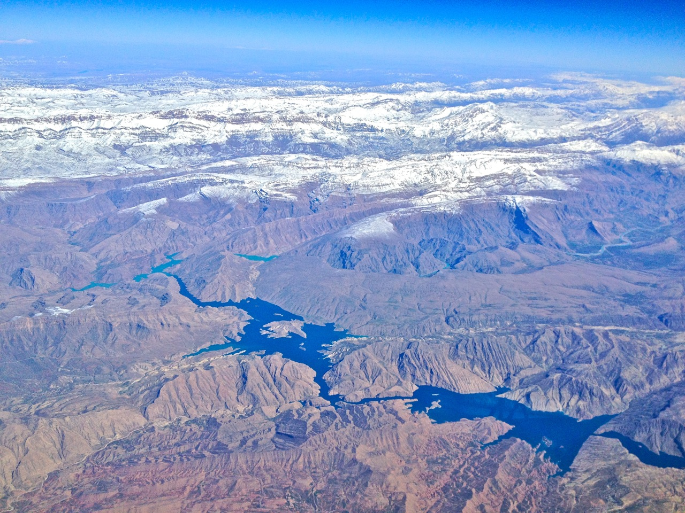
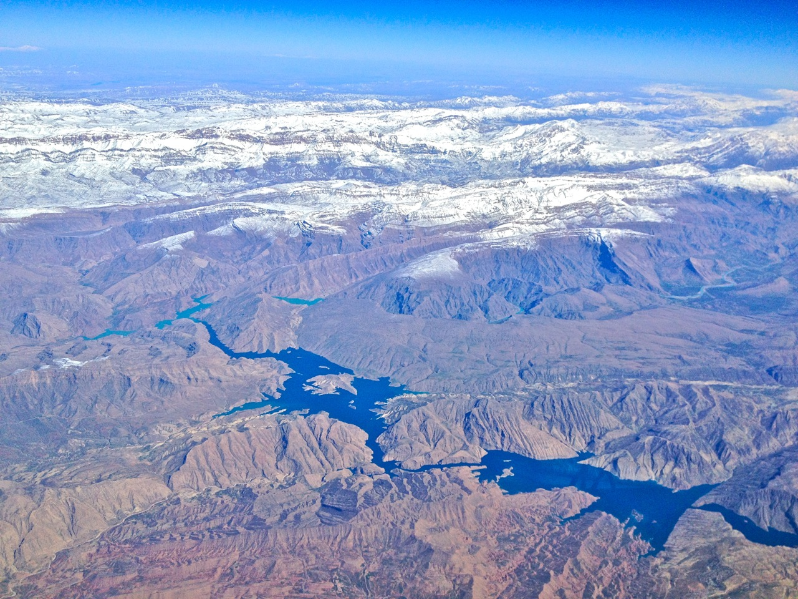

Asia
On the western slopes of the Great Divide, Yoho National Park brings Canada’s alpine majesty within reach of casual visitors and seasoned backpackers alike. Unplug and spend time with family at one of four campgrounds, challenge yourself with an all day hike to a half-billion-year-old fossil bed, or immerse yourself in Canadian history by traveling through the mountain pass that linked the West to the rest of Canada.

Himalayan Mountains


Himalayan Mountains
Emerald Lake is the largest lake located in Yoho National Park in the province of British Columbia. It’s just 20 minutes drive west from it’s famous neighbour Lake Louise, but is not as well known. With a beautiful green hue it truly stands up to it’s name. The colour is most intense in early summer when there is a high amount of glacial silt flowing from the surrounding mountains.
Book a Trip
Zagros Mountains

 

Zagros Mountains
The Takakkaw (Cree Indian for “wonderful”) Falls is formed by meltwater from the Daly Glacier in the Waputik Mountains and consists of three distinct, nearly vertical drops. Tumbling 254m (830 feet) in one stretch and 384m (1,260 feet) in total, these falls are among the highest in Canada and the gateway to some of Yoho’s most beautiful hiking. Feel the spray at the base of the falls or enjoy views from afar. Accessible mid-June until mid-October to small vehicles and bicycles only due to steep, tight switchbacks.
Book a Trip
Altai Mountains


Altai Mountains
Nestled at the foothills of Wapta Mountain, Yoho Lake is a serene landscape. Yoho Lake is only accessible after a strenuous and beautiful hike from Little Yoho Valley. Enjoy the serenity from Yoho National Parks iconic red chairs located strategically to give you the best view.
Book a Trip